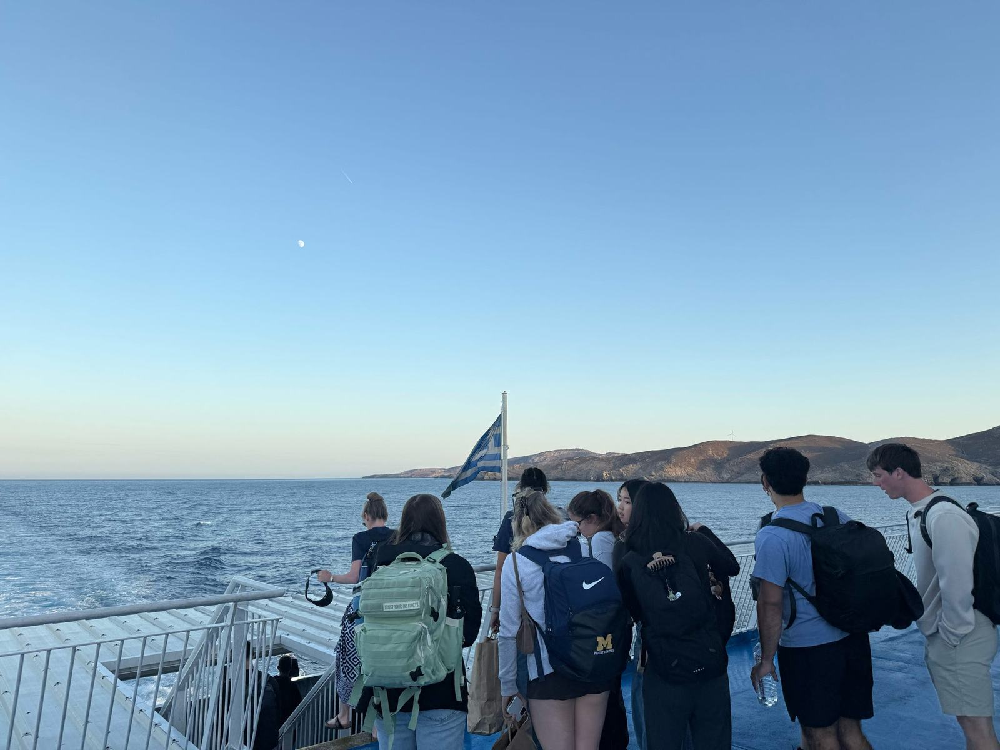
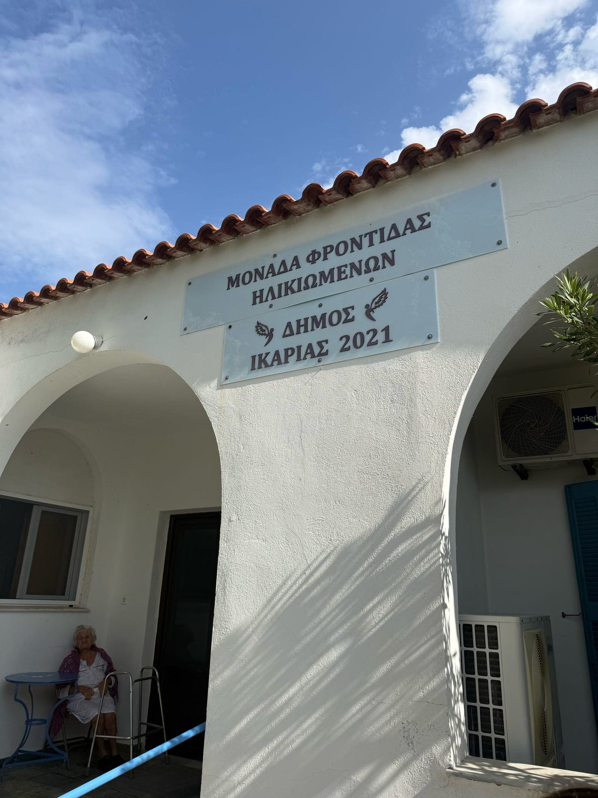
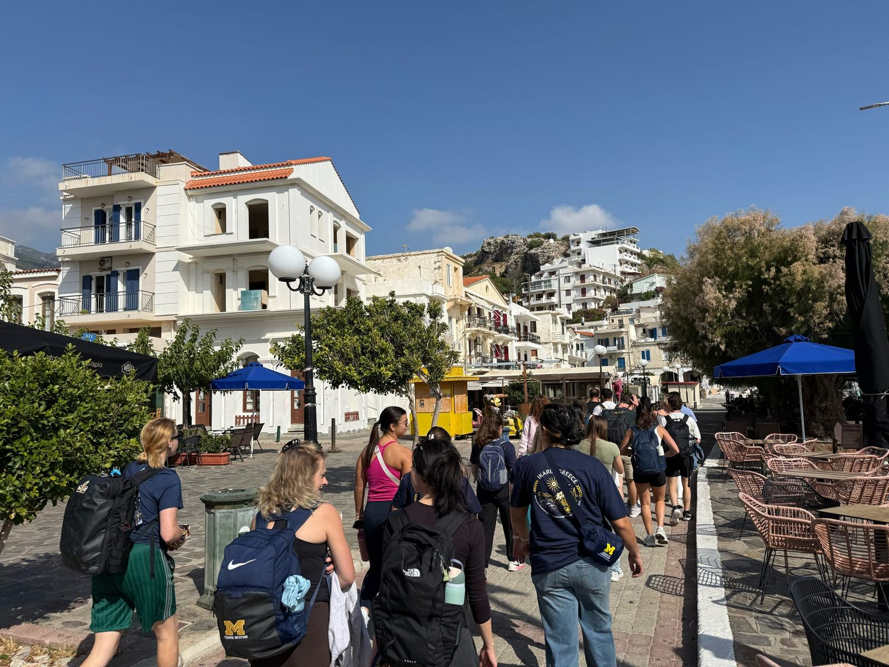
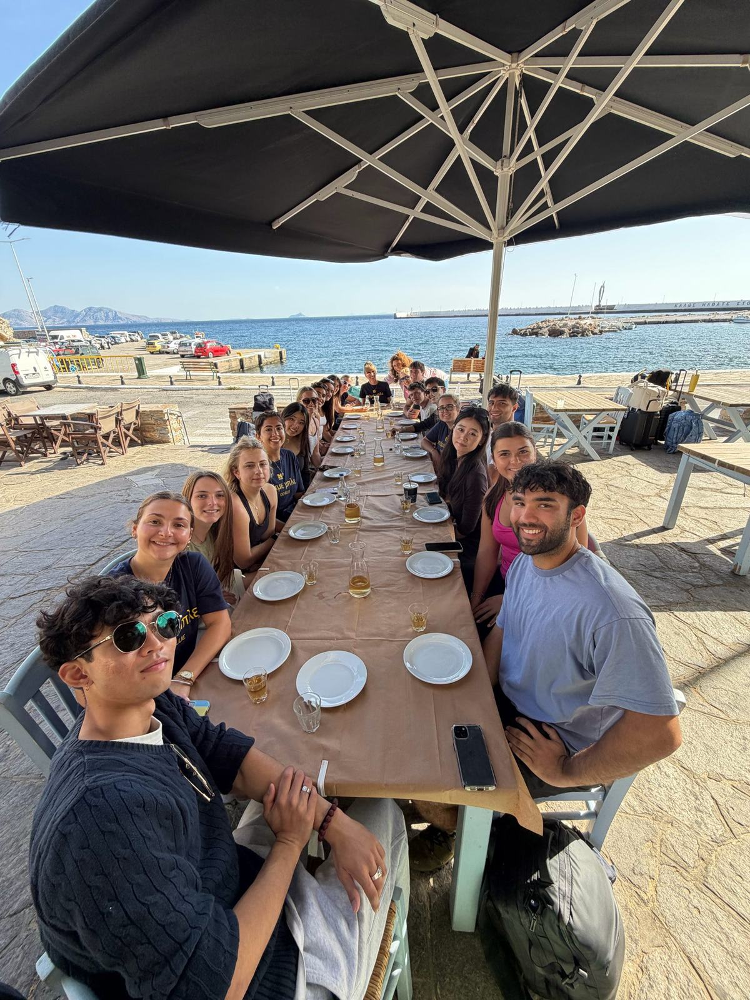
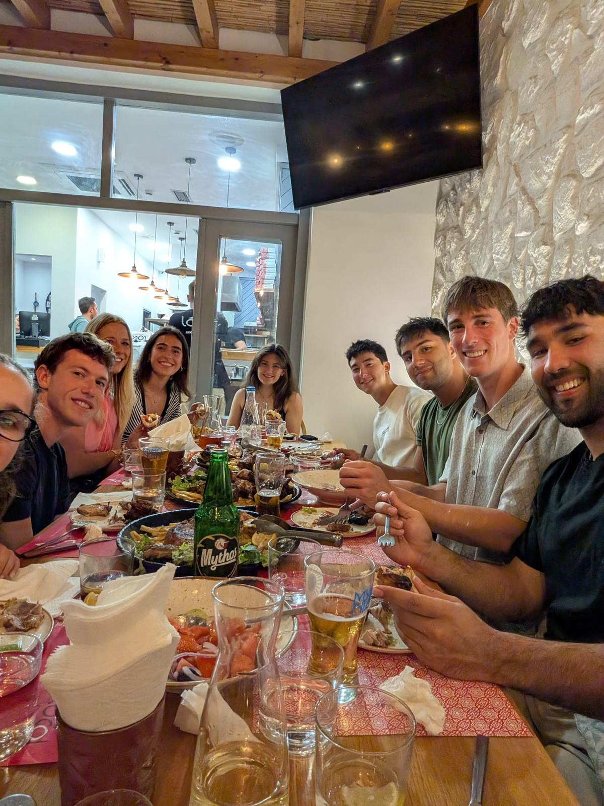
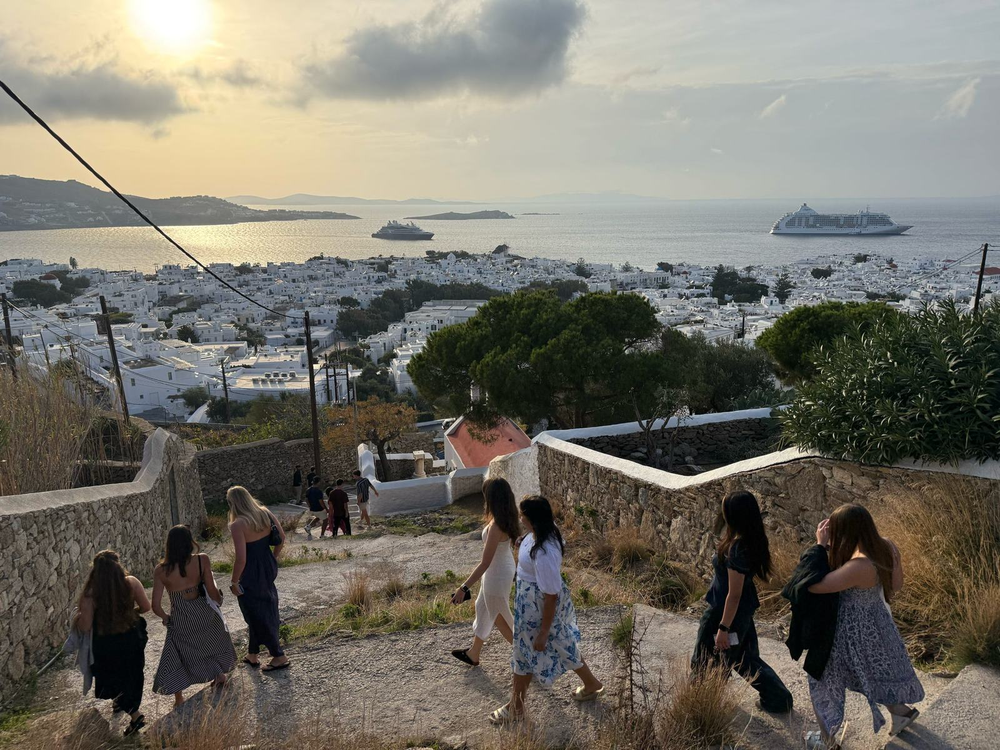
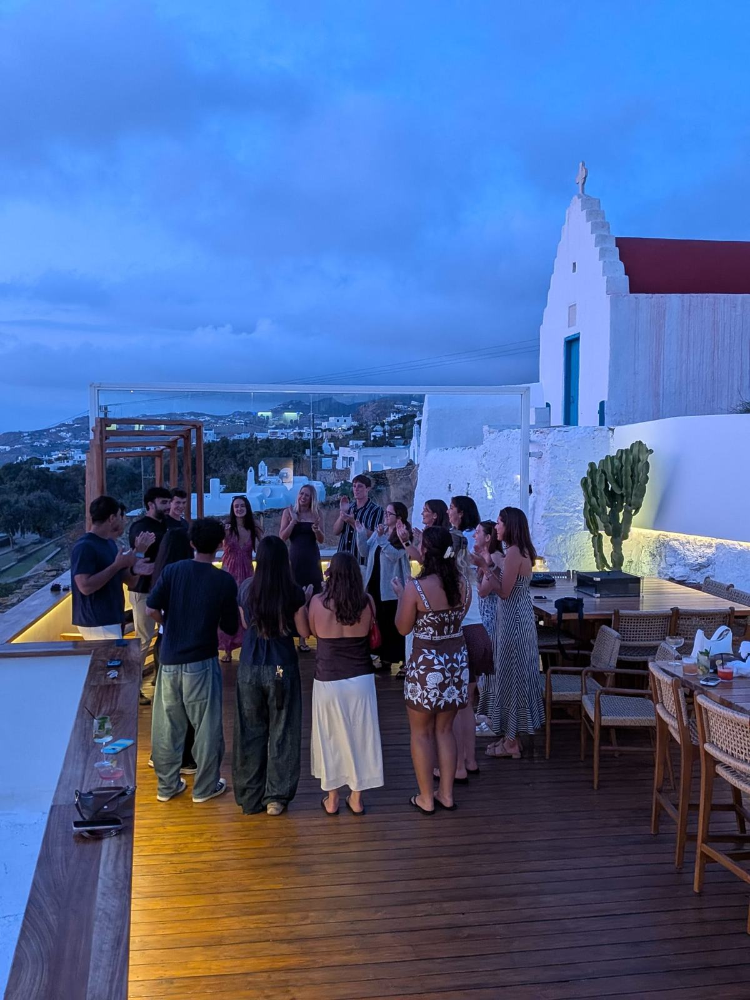
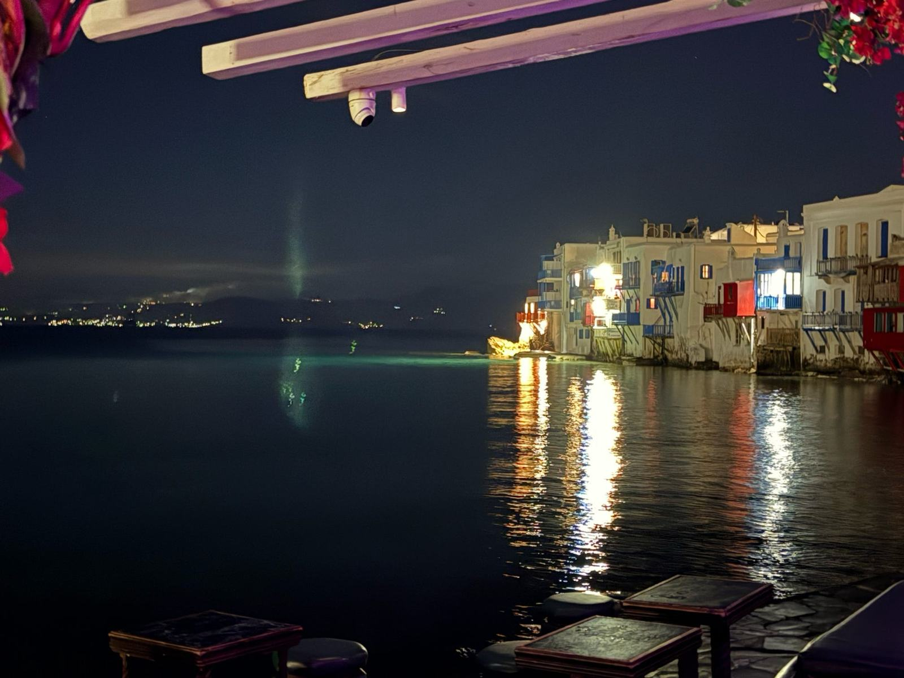
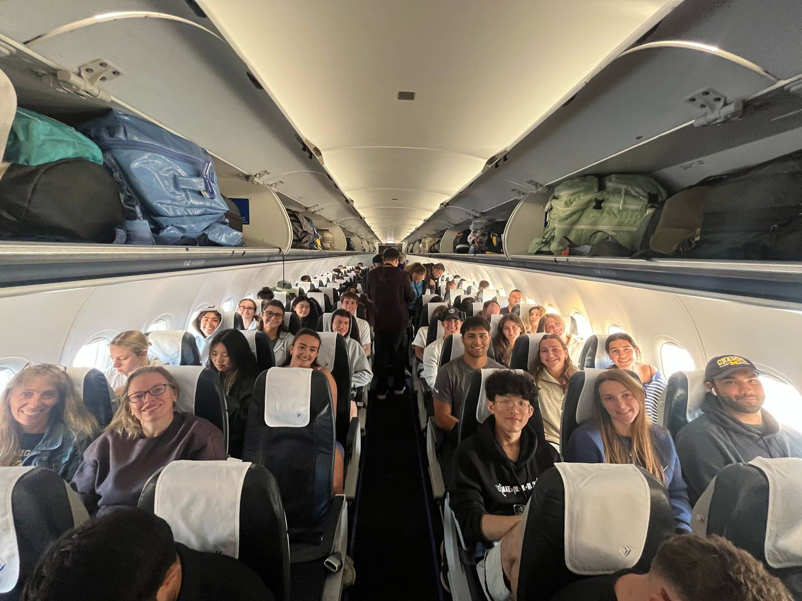

Beyond the Blue Zone
Healthy aging isn’t only about staying independent for as long as possible. It’s also about receiving the care, support, and connection we need as we grow older.

Before visiting Ikaria, much of what I had heard about the island focused on its reputation as a Blue Zone, where people are known for living unusually long lives. Throughout our trip, we met older residents who remained physically active, independent, and involved in their communities. However, our visit to a local nursing home gave us an opportunity to see another side of aging on the island.

Because we hadn’t brought face masks, we weren’t able to interact directly with the residents. Instead, we received a brief tour of the facility and spoke with a physical therapist and another staff member about how the nursing home operated. One detail that surprised me was how small the facility was, with a maximum capacity of just 15 residents.
I couldn’t help but compare it to the nursing home where my grandmother had stayed in the United States. Her facility was several stories tall and organized more like a hotel or apartment building, where residents had their own units with spaces to cook and eat. There wasn’t a shared kitchen or dining area like the one we saw in Ikaria. The Ikarian nursing home felt much more communal, with residents sharing common spaces rather than living in separate units. I was also surprised by how clean and well-maintained the facility appeared compared with my grandmother’s nursing home.
The staffing also seemed different. From what I observed, the Ikarian facility appeared to have fewer residents per staff member than my grandmother’s nursing home. Of course, this was only a brief visit, and I recognize that my grandmother’s experience at one facility isn’t necessarily representative of nursing homes across the United States. Still, the contrast made me think about how much the environment and organization of a care facility can shape residents’ daily experiences.
The staff explained how they rotated through shifts to provide care throughout the day and how meals were adjusted to accommodate each resident’s individual health needs. We also learned about how residents were transported to the hospital when necessary and how the staff incorporated physical exercise into their routines to help maintain mobility and function.
One detail I particularly appreciated was how the nursing home celebrated residents’ birthdays and invited their families to participate. Throughout our trip, we had seen how important social connections were in everyday Ikarian life, and it was meaningful to see how the facility tried to maintain those connections even when residents required additional care.
This visit also reminded me of my experiences volunteering with older patients through the Hospital Elder Life Program at Michigan Medicine. I’ve seen how important mobility, individualized attention, and social interaction can be for older adults in healthcare settings. It was interesting to recognize these same priorities in a nursing home on an island with a very different environment and lifestyle.
Looking back, this visit gave me a more complete understanding of aging in Ikaria. While much of the island’s reputation focuses on residents who remain active and independent well into old age, there are also individuals who require ongoing support. I realized that healthy aging isn’t necessarily about maintaining complete independence forever, but also about having access to appropriate care and opportunities for connection as people’s needs change.
Healthy aging isn’t only about staying independent for as long as possible. It’s also about receiving the care, support, and connection we need as we grow older.
Photographs from the experiences and people behind this reflection.






